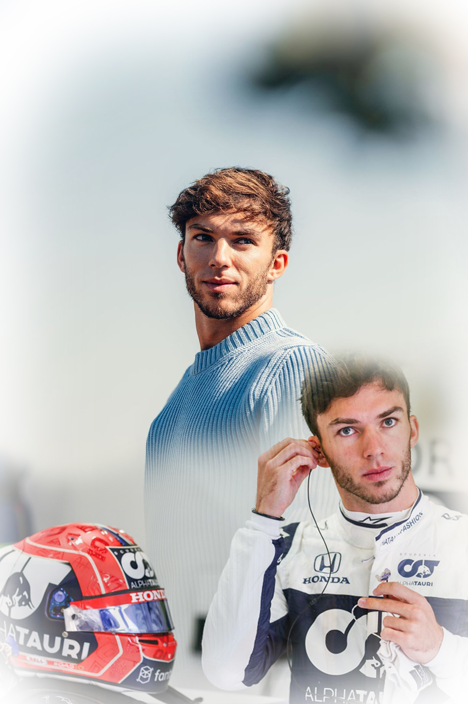

OWNERSHIP AND IDENTITY
Being one of two F1 teams owned by Red Bull, Alpha Tauri adopted its new name changing from Toro Rosso for the 2020 season in order to capitulate their transition from a junior team under Red Bull Racing to a sister team. Working towards the same goal of seeking improvement and excellence in, research and development, Race Strategy, and execution, while competing independently.
BUT WHY ALPHA TAURI?

Alpha Tauri is actually the title of Red Bulls designer fashion brand! To market for their brand Red Bull chose to sculpt their sister team’s identity to advertise for Alpha Tauri Fashion. According to SCUDERIA ALPHA TAURI “Over 50% of F1 fans would buy from a brand they see during the races and almost 2 billion people watch the F1 World Championship every year”. It’s easy to believe too as the Alpha Tauri brand continues to gain popularity today. Even having their F1 drivers model for exclusive fashion releases.